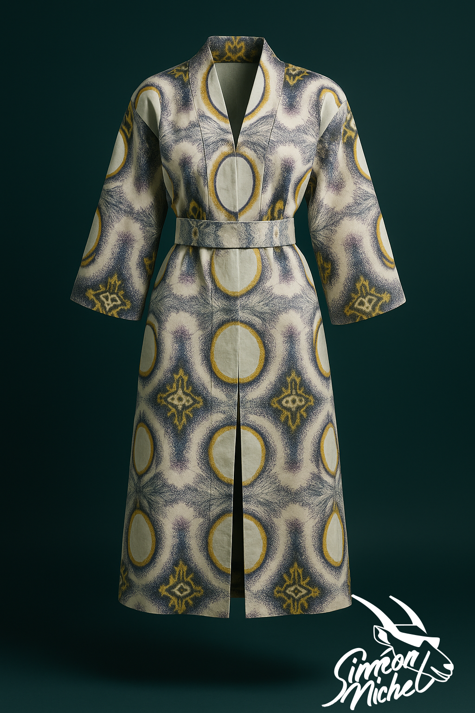
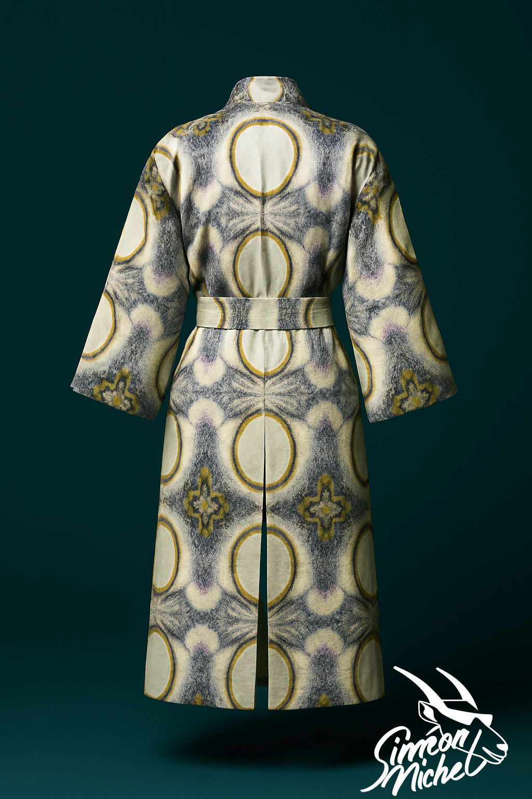
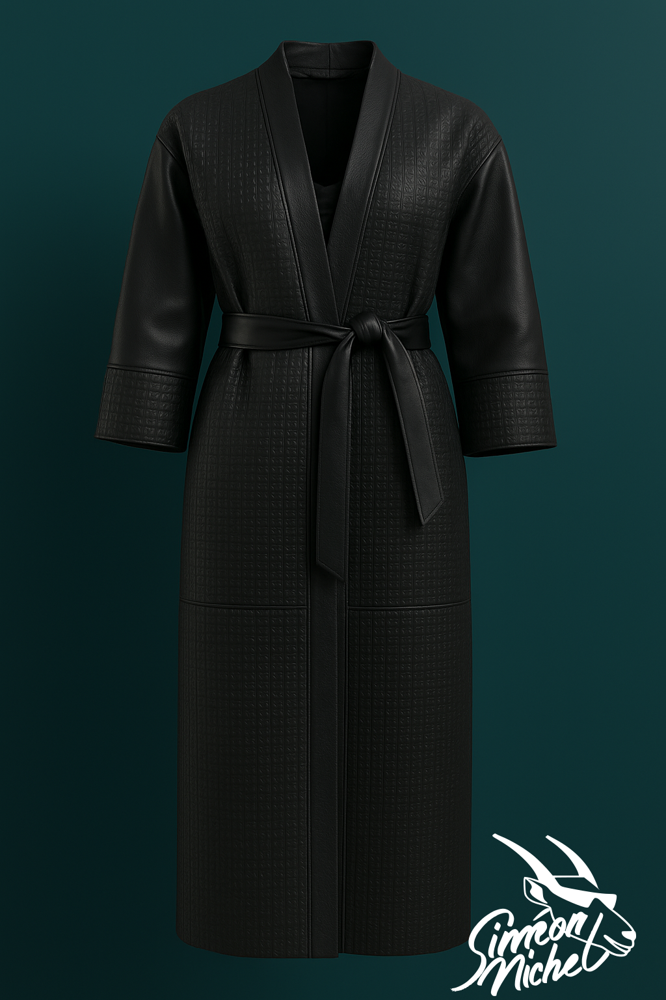
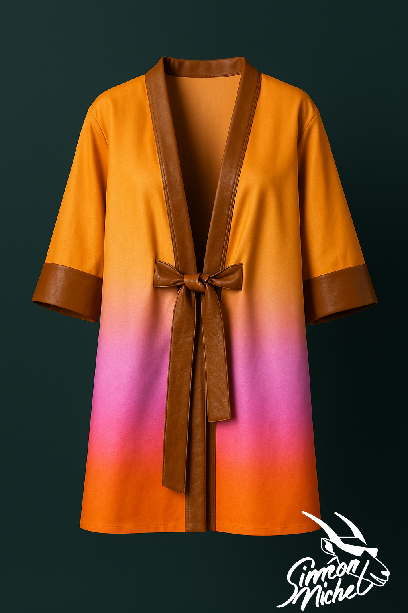
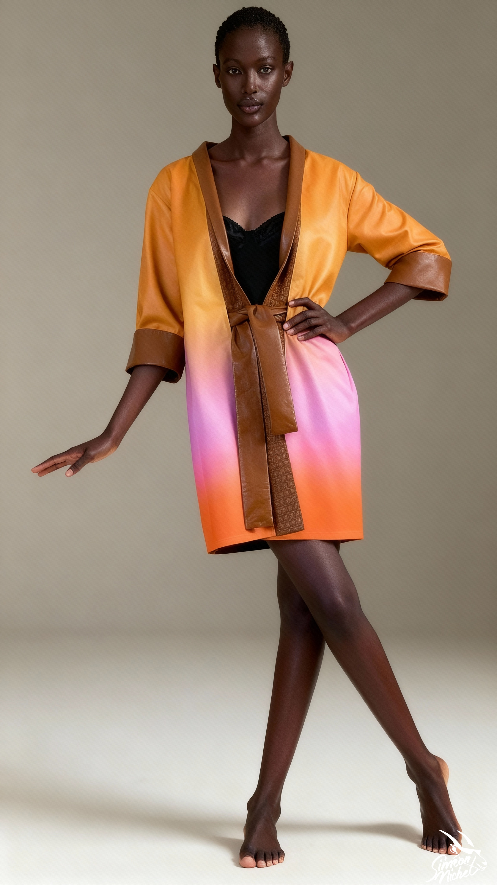

.png)
Technology in this field is evolving rapidly, and since I don’t yet have a complete picture of the client’s needs, I suggest starting with a day-rate model.
- Daily rate: €500
- Generation fees: around €20 (for two pieces of clothing)
- A minimum guarantee of photos + videos for two pieces of clothing
- Up to 3 revisions
If there is a commitment for a larger number of clothing items, I’m open to discussing a bulk pricing offer.
Additionally, if the client’s needs are very clearly defined (example., front and back photos + 360° shot), I can explore creating automation tools, which could reduce the cost per item.
Below you can find a glimpse of the possible type of shots
Notes:
1. The resolution and quality of the shots can be improved. For this draft, I didn’t focus on upscaling or fine-tuning image quality.
2. The original input shots were not fully harmonized. Using photos taken in the same environment, with consistent angles and lighting, would greatly improve the overall coherence between outputs.
|
|
|
|
.png)
|

|
|  |  |
|  |
|  |
|  |

|

|
<!-- Note: black1.mp4 not found; using black2.mp4 present in img/ -->